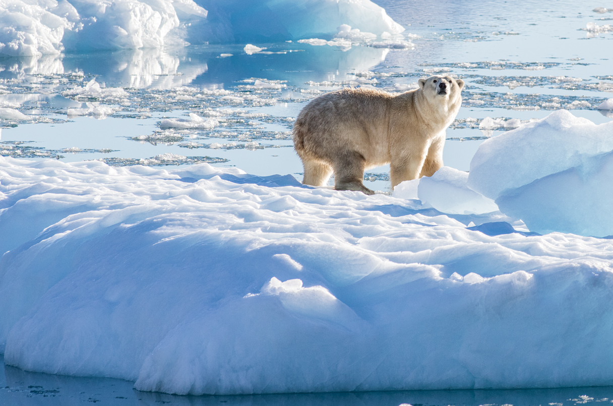

16 JUN 2022 2:10 PM BY JACK TAMISIEA
Polar bears typically depend on solid sea ice to hunt and keep their bellies full. To breathe, seals pop up in holes in the frozen seawater, and there the bears ambush and eat them. Now, however, scientists have discovered a group of polar bears in southeastern Greenland that does things differently, using a slushy mix of freshwater snow and ice as a platform to ambush seals. This new population may offer clues to how polar bears will fare as the Arctic warms at an alarming rate and sea ice shrinks, threatening many polar bears with starvation.
The southeastern Greenland polar bears are genetically distinct from polar bears elsewhere in the country, researchers report today in Science. That makes this small group of a few hundred polar bears its own subpopulation, one of just 20 in the world. “This southeast Greenland group of bears is the most genetically distinctive population of polar bears that has ever been documented,” says Elizabeth Peacock, a polar bear biologist at Emory University who was not involved with the work.
Westerners first spotted polar bears in southeastern Greenland’s fjords—a region characterized by mountainous topography and craggy icebergs—in 1830. The animals live just a couple degrees south of their closest relatives, which reside in more typical polar bear environments. The southeastern bears aren’t well-studied because of the unpredictable weather and heavy snowfall at the rugged southern tip of Greenland.
But Kristin Laidre, an ecologist at the University of Washington’s Polar Science Center, and her colleagues were able to access the unforgiving region with heavy-duty helicopters. To ensure they made it back to their research base at a Greenlandic coastal community 4 hours away, the scientists stashed fuel in the snow at strategic spots in the bears’ habitat years in advance.
Over the course of 7 years, the team gained unprecedented access to the region’s resourceful bears. They tracked 27 local bears with satellite tags to see where they went, comparing that with more than 30 years of polar bear tracking data from throughout Greenland’s eastern coast. They bolstered these data with observations from traditional subsistence hunters in nearby communities, who provided genetic samples from slain bears for the scientists to test.
Most likely, the bears are genetically distinctive because they have been isolated by their habitat. Polar bears in southeastern Greenland are hemmed in by the mountainous expanse of the Greenland Ice Sheet to the west and rapid currents to the east. Moving overland is difficult as the southeastern tip of Greenland is gashed with fjords and flanked by steep cliffs.
With little sea ice for more than 250 days of the year, the animals utilize blocks of floating glacial ice breaking off of the Greenland Ice Sheet to ambush unsuspecting seals—the first time polar bears have been observed utilizing frozen freshwater for most of the year. As the area’s sea ice continues to dwindle, Laidre and her colleagues think this slushy glacial mélange offers these bears an alternative hunting ground in a warming Arctic.
In their rugged environment, these isolated polar bears are homebodies, sticking mostly to the glacial ice floating in their local fjords. The researchers observed that the median distance covered by female polar bears over 4 days in this area of Greenland was just 10 kilometers, compared with the nearly 40 kilometers female bears in northeastern Greenland cover in the same amount of time. But these bears are not lazy: Roughly half of the animals the team tracked covered an average distance of 190 kilometers to return to their home fjords after their hunk of glacial ice drifted southward on one of the coast’s swift currents.
These environments are relatively rare outside of southeastern Greenland and the Norwegian archipelago of Svalbard. “This isn’t a lifeboat for all polar bears,” Laidre says. Peacock agrees. “This is a very small corner of the world,” she says. “It does not change the status of polar bears in the Arctic.” In fact, because they live toward the southern edge of their species’ range, these few hundred polar bears are more susceptible to climate change.
Still, southeastern Greenland’s resourceful bears can teach scientists vital lessons about how melting sea ice may impact these creatures, Laidre says. Compared with bears farther north on Greenland’s coast, female southeastern Greenland polar bears are smaller and produce fewer cubs. She thinks future research on these animals can help scientists predict how polar bears will fare as disappearing sea ice isolates other subpopulations of polar bears. “They’re an important group because they can help us look into the future.”